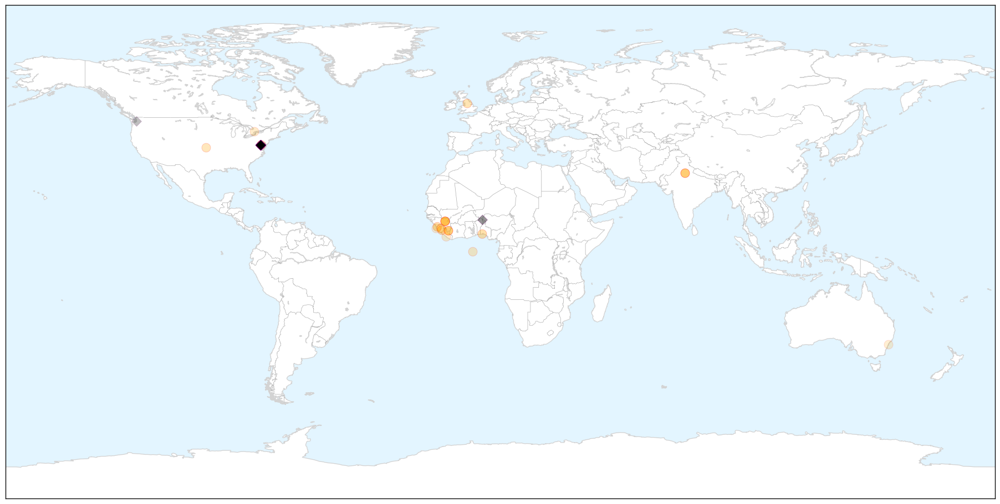

Bubonic Plague
30-Day Web Trend
1 alerts, 0 warnings

30-Day Twitter Trend
0 alerts, 0 warnings

Article Locations


Article Confidences

Top Articles:
- 0.974
- Crook County teen infected with bubonic plague; Disease probably came from flea bite during hunting trip in Morrow County
- 0.965
- Crook County teen contracts bubonic plague
- 0.962
- Bubonic plague confirmed in Crook County teen after hunting trip near Heppner
- 0.949
- Teenage girl diagnosed with bubonic plague in Oregon — RT USA
- 0.943
- Sweet News, Bros! The Bubonic Plague Is Back, And It's Already In America
- 0.938
- Teenage girl in Oregon hospitalized with bubonic plague
- 0.918
- Teenage girl in Oregon hospitalized with bubonic plague
- 0.823
- Oregon Teen Has Bubonic Plague, State Officials Say
- 0.797
- Oregon Teen Contracts Bubonic Plague After Hunting Trip
- 0.685
- Oregon teenager becomes nation's 16th plague case
- 0.664
- Rare bubonic plague infects teen in Oregon
- 0.637
- Here's What You Need to Know
- 0.625
- What Is The Bubonic Plague? Oregon Teen Diagnosed With Infectious Bacterial Disease
- 0.590
- Teenage Girl Contracts Bubonic Plague while Hunting in Oregon
Top Tweets:
-
No tweets found for Oct 30, 2015
Ebola
30-Day Web Trend
3 alerts, 0 warnings

30-Day Twitter Trend
15 alerts, 0 warnings

Article Locations

X

Article Confidences

Top Articles:
- 1.000
- Mystery deaths in Sierra Leone spread fear of Ebola relapses
- 0.997
- An Epidemic Every Year
- 0.997
- J&J starts vaccine trial in Sierra Leone, even as Ebola fades
- 0.995
- Politico SL News Sierra Leone toughens Ebola border screening with Guinea
- 0.993
- Remembering Adadevoh and the Ebola victory
- 0.977
- Ebola: burying the bodies
- 0.970
- Dozens of Sierra Leonean Medical Experts trained on Disease Control and Prevention in China
- 0.969
- International group reviews politics of Ebola response
- 0.956
- A Persistent Fight
- 0.955
- United Nations World Food Programme - Fighting Hunger Worldwide
- 0.933
- Dozens of Sierra Leonean Medical Experts trained on Disease Control and Prevention in China
- 0.899
- impact of the disease is far from over
- 0.788
- What happens to an Ebola clinic when epidemic moves on? - Liberia
- 0.695
- Liberian VP thanks Minnesotans for support during Ebola crisis
- 0.632
- WHO gets it wrong again: As with SARS and H1N1, its processed-meat edict went too far
- 0.590
- LIBERIA: Gov’t Approves US$1000,000.00 For Bassa Ebola Fight, As Superintendent Urges Leaders To Report Cases
- 0.559
- India,Sierra Leone, to scale up ties
- 0.549
- India, Sierra Leone Scale Up Ties
- 0.538
- What's killing the children of Freetown? Because it's not Ebola.
- 0.531
- Foreign troops helped defeat Ebola outbreak
Top Tweets:
- 0.977
- Ebola virus فيروس الأيبولا - https://t.co/FeJD4rp4W0 ebola
- 0.968
- Blocking Ebola virus budding by regulating calcium signaling - Medical Xpress https://t.co/3VwXYh3HEC ebola EVD
- 0.958
- CDC issues Ebola outbreak update - https://t.co/jClSgpUOYx ebola
- 0.954
- Ebola Outbreak – Guinea Records 9 - https://t.co/EPopAApGDu ebola
- 0.933
- Blocking Ebola virus budding by regulating calcium signaling - https://t.co/5BXkdBHV0f ebola
- 0.928
- Penn study blocks ebola virus budding by regulating calcium signaling - https://t.co/FhUbBcHIQY ebola
- 0.920
- Deforestation blamed for Ebola outbreak - https://t.co/makRe5fxGs ebola
- 0.908
- Guinea Agribusiness: Sector recovering after Ebola epidemic - https://t.co/pp7b5lDsBH ebola
- 0.906
- Dr. Nahid Bhadelia tackles Ebola - https://t.co/2yp2E38OLW ebola
- 0.901
- 3 New Cases of Ebola Emerge in Guinea - https://t.co/4xYGw9BnfR ebola
- 0.895
- Foreign troops helped defeat Ebola outbreak - https://t.co/UtYeD2CqPf ebola
- 0.892
- Guinea Records 3 More Ebola Cases Related To Woman Whose Body Not Properly Handled After ... - https://t.co/2h21mNXNGZ ebola
- 0.884
- Penn study blocks ebola virus budding by regulating calcium signaling ... - EurekAlert (press release) https://t.co/H2ceu4X7Mt ebola EVD
- 0.883
- Guinea records three new cases of Ebola - https://t.co/36Se0tY2Hh ebola
- 0.879
- An epidemic much larger than Ebola - https://t.co/gRUhYaKN0k ebola
- 0.871
- Ebola: au tour du Canada de faire appel à Medicago - https://t.co/PI2sspo7En ebola
- 0.868
- ebola - https://t.co/gIfXx05FnU ebola
- 0.868
- Ebola threat - Dr. Ida Bergstrom explains - https://t.co/ELI5T6xxhR ebola
- 0.868
- Ebola - https://t.co/RB2GMwuSLG ebola
- 0.868
- Ebola - https://t.co/FjePkxTYoP ebola
- 0.862
- Ebola shows global health governance weak - https://t.co/7TlT9llSQj ebola
- 0.848
- FDA Should Learn From Ebola Epidemic Take Action To Respond To Chikungunya Other NTDs - https://t.co/qYgWtBcdUL ebola
- 0.847
- Nurse Quarantined During Ebola Panic Sues Chris Christie - https://t.co/EetMZyhW46 ebola
- 0.827
- International group reviews politics of Ebola response - https://t.co/AJ15jo79FZ ebola
- 0.823
- Guinée : Ebola continue encore à faire des victimes… - https://t.co/nTgGRbso8U ebola
- 0.808
- Nurse quarantined over Ebola has no plan to sue in Maine - https://t.co/CmooGZohNb ebola
- 0.804
- One year after Ebola crisis: impact of the disease is far from over - https://t.co/xM63n86GDs ebola
- 0.794
- Award winning Ebola response - https://t.co/iVVZLpMAO8 ebola
- 0.783
- Le virus Ebola n'est pas encore derrière nous mais la situation d'urgence est passée. https://t.co/KQPi317vTR Africaagainstebola
- 0.780
- Nurse in Ebola Quarantine Case Sues Gov. Chris Christie - https://t.co/fWZ8NNA1E6 ebola
- 0.774
- Flipnote by Ebola-San - https://t.co/6IN7lwodou ebola
- 0.772
- Nurse quarantined over Ebola fears sues Gov. Chris Christie - https://t.co/XFbPBO6vtm ebola
- 0.768
- Speaker recounts darkest days of Ebola crisis reflects on scourge of ... - Campus Echo Online https://t.co/LjAEmXOvTq ebola EVD
- 0.762
- The FDA Learned Nothing from Ebola - https://t.co/g2pM7XOclS ebola
- 0.761
- Frieden: Three lessons from Ebola - https://t.co/gugz6Eix4S ebola
- 0.753
- MSU Professor Shares Story Of Ebola Aid - KAUZ-TV https://t.co/Eq6wxf8OFk ebola EVD
- 0.751
- Reminder: The Ebola outbreak is not over. Guinea records 3 new cases bringing total to 9 https://t.co/ljCLANQUMD TackleEbola
- 0.748
- World Food Programme: 'Without enough food people can't fight Ebola' - BBC News - https://t.co/uIzAk93mpt ebola
- 0.747
- Blocking Ebola virus budding by regulating calcium signaling - Medical Xpress https://t.co/VpYSjoSnBY
- 0.734
- MSU Professor Shares Story Of Ebola Aid - https://t.co/0De2rMzIn8 ebola
- 0.722
- The FDA Learned Nothing from Ebola - The Weekly Standard https://t.co/BnDiCsS9xY ebola EVD
- 0.722
- One time a family poured dirty water onto us. An ebola case finder remembers working in - https://t.co/PRutwgY3LG ebola
- 0.699
- Ebola 'Team B' model could serve more broadly its members say - CIDRAP https://t.co/YopncFL2ng ebola EVD
- 0.687
- Good News in China Launching Ebola Vaccine Clinical Study Phase Two - WHO - https://t.co/xWbi1UAACt ebola
- 0.683
- One year on Ebola cases close to zero and recovery begins - https://t.co/aRJq8fCXjS ebola
- 0.683
- Nurse Saying She Was Unlawfully Detained Over Ebola Scare Suing Christie - https://t.co/wW9GdQu8z8 ebola
- 0.683
- Attacking Ebola Aftershocks: Natural History Study Vital - https://t.co/7mbS8spTBg ebola
- 0.683
- Attacking Ebola Aftershocks - Natural History Study Vital - https://t.co/NtIuIuEUXy ebola
- 0.671
- AEL Tearfund Graduate 125 Ebola Survivors - https://t.co/Kw2CCu3jZZ ebola
- 0.648
- IOM launches second phase of Ebola Free Ghana - https://t.co/Q7oXFDW8pl ebola
Showing top 50 tweets...